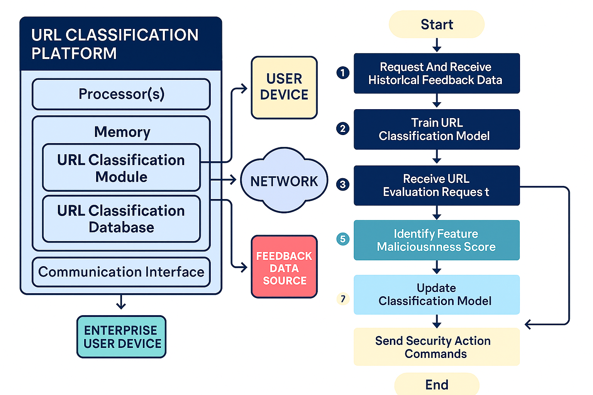
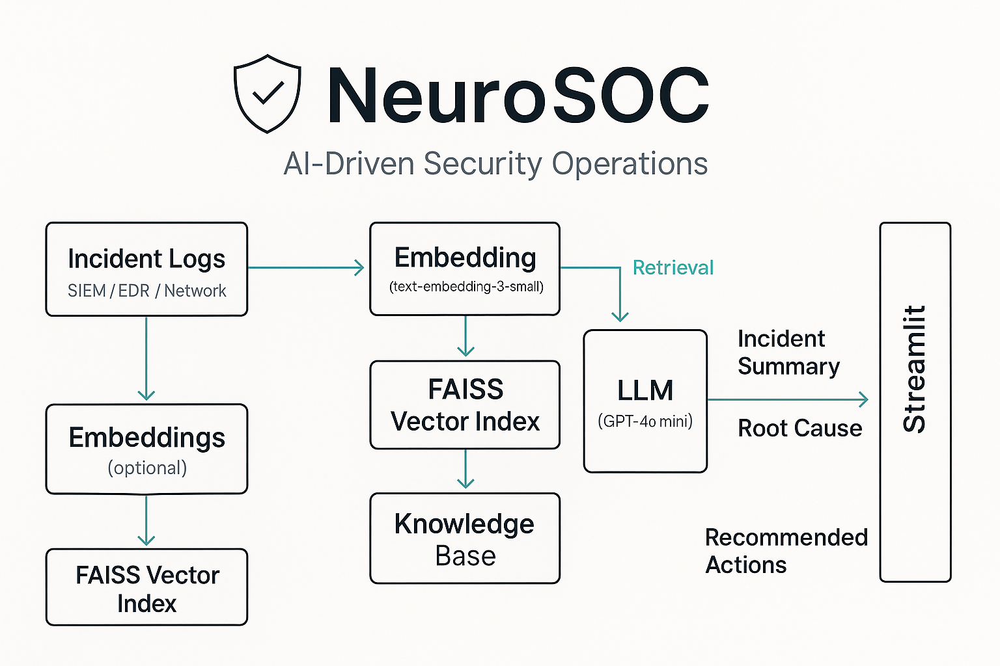
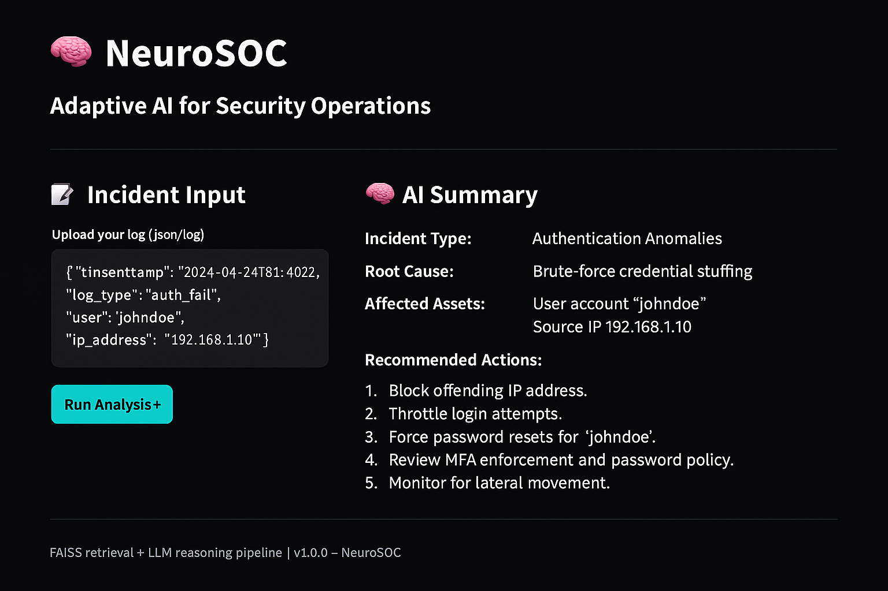

Sarah Solieman
Cybersecurity Data Scientist
Security and AI: because trust issues should be automated
Senior Data Scientist with 6+ years of experience in security, fraud, and ML operations. I specialize in building ML pipelines, deploying anomaly detection, and working closely with SOC teams to design robust detection systems. I lead projects focused on spam, phishing, and malicious URL classification, owning feature pipelines end-to-end. I bring deep modeling expertise with a healthy skepticism of dashboards that never get used.
I studied Data Science and Political Science at UC Berkeley—fully convinced I was destined for courtrooms and closing arguments. Then I was intrigued by how AI could drive social good. Somewhere between ethics debates and building my first model, I realized I’d rather build the system than argue about it.
I founded the Innovation Working Group—uniting engineers, data scientists, and policy minds to tackle bot detection and social media influence. Our findings informed academic research and platform risk discussions around coordinated manipulation.
- Security & Fraud Detection: Phishing, malware, spam, and identity abuse analytics across SMS, email, and web platforms.
- MLOps & Scalable Pipelines: Architected full-stack ML systems on AWS (Lambda, SageMaker, API Gateway, etc.) with automated training, deployment, and monitoring.
- Anomaly & Drift Detection: Built feature scoring, data drift monitoring, and clustering-based anomaly blockers to catch evolving threats.
- Trust & Safety Analytics: Developed models and insights that informed real-time blocking systems and abuse response strategies.
- Cloud & Tooling: Python, SQL, Jupyter, Scikit-learn, spaCy, BERT, AWS, GCP

MLOps
Automated pipelines, scalable ML infra, real-time scoring.

Security Detection
Threat modeling, anomaly detection, phishing & fraud intel.

Data Analytics
Insightful dashboards and metric deep dives.
Patent
US 20250080580 A1 — Intelligent URL Risk Scoring System
Designed a machine learning system to classify potentially malicious URLs
using enriched signals—like crawl behavior, redirect flow, and IP/network
patterns. Instead of static string matching, it scores risk based on how
URLs behave in the wild, enabling early detection of phishing, drive-by
downloads, and spoofed domains.
This system came from realizing that rigid, one‑shot rules at SMS‑scale are
like playing whack‑a‑mole blindfolded. Instead, I built a pipeline that
doesn’t rely on easily spoofed content but on crawl behavior, redirect chains
and network‑level signals. The result: a scalable, ML‑driven classifier that
flags emerging malicious URLs in real time—no manual chasing required.

Projects

NeuroSOC is an experimental platform I designed to explore how AI can automate key parts of Security Operations workflows.
It uses a Retrieval-Augmented Generation (RAG) pipeline to interpret logs, retrieve relevant playbooks, and summarize potential incidents,
helping analysts respond faster and with clearer context.
Built with Python, Streamlit, FAISS, and OpenAI’s API, the system demonstrates how
machine learning and automation can reduce alert fatigue and bring structure to unstructured threat data.

This page was built with 5 lines of logic and 500 lines of “why is this off by 2px?"